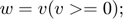

Contents
Logical Indexing
Example of a problem getting only the nonnegative elements of an array
w = []; % empty array jj = 0; for ii = 1:length(v) if v(ii) >= 0 jj = jj + 1; w(jj) = v(ii); end end
Example Revisited
MATLAB provides a more elegant solution:
w = []; % empty array for ii = 1:length(v) if v(ii) >= 0 w = [w v(ii)]; end end
Logical indexing: Logical arrays
- The ultimate solution needs only a single line: 
- This is an example of logical indexing
- To understand why and how this works, we need to introduce logical arrays like:
[4 -1 7 5 3] > [5 -9 6 5 -3]; c = [2>1, 2<1, ~(3>2 && 4>5)]; holmes = logical([1 -2 0 0 9.12 -2])
holmes = 1×6 logical array 1 1 0 0 1 1
Example of using the logical arrays as the index of another array
r = randi(10 , 1 ,6); holmes = logical([1 -2 0 0 9.12 -2]); r(holmes); v = [56, 34, -2, 7 29 53 30 -3 5 45]; keepers = v>=0; w = v(keepers); w = v(v>=0); % Mas mabilis kaysa sa nasa taas confidence = [100 97 11 12 76 80 9 4 98]; v_10 = v(confidence >= 10); % evaluated of trues and falses evaluated to v
%Suppose you want to replace all negative values to 0: % v(v<0)=0
v =
56 34 0 7 29 53 30 0 5 45